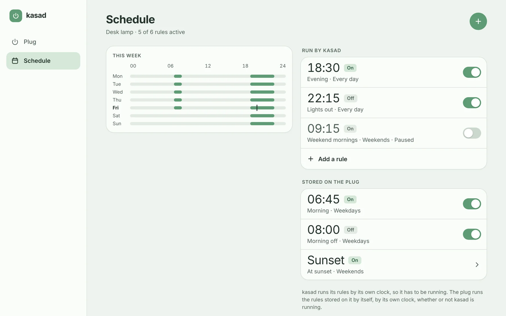
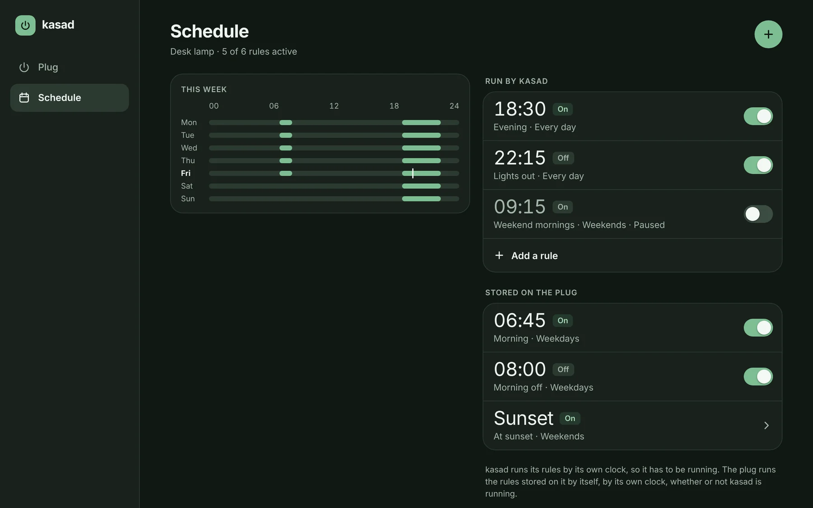
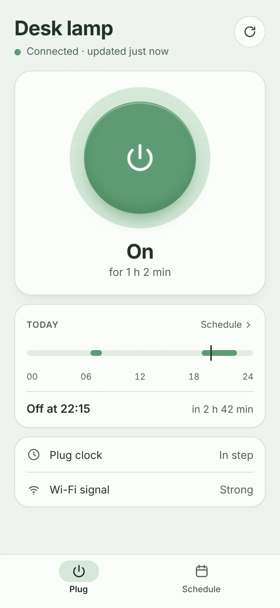
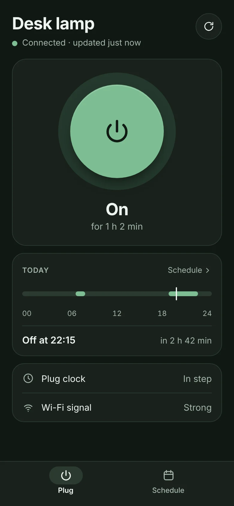
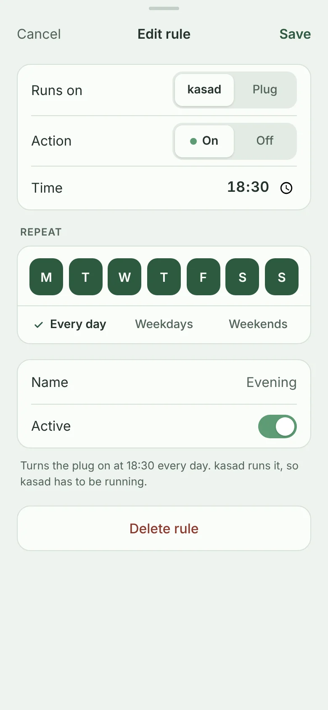
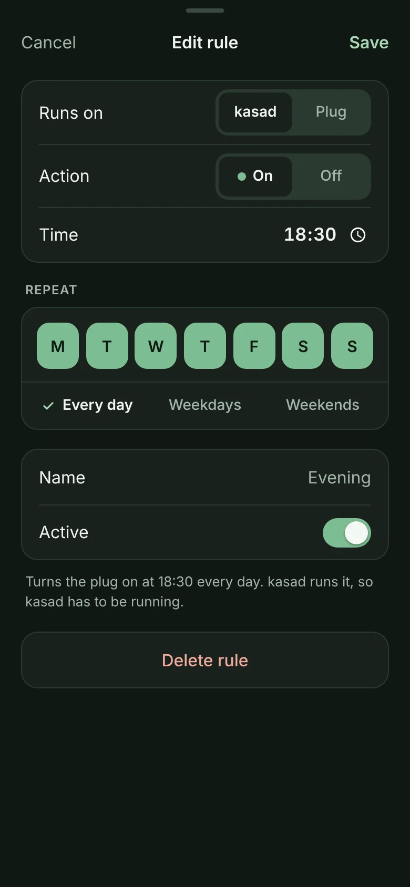

Switch it from any screen
The web app is built into kasad. It shows whether the plug is on and when a rule will next act, and switches it with a tap, on a phone or a desktop, in light or dark.
kasad is one small program that talks to TP-Link Kasa plugs over your own network. It runs your schedule, keeps the plug's clock right, and serves a web app for your phone and desktop. No account, and no internet connection.
For Kasa plugs that speak the local protocol on TCP port 9999 · Linux on x86-64 and ARM · MIT license
The web app is part of kasad: open its address in any browser. Shown here with a made-up plug and rules.




Why kasad
A Kasa plug stores its schedule and runs it by its own clock. That clock is reported to reset when the plug loses power, and the plug sets it again from the internet. Keep the plug off the internet and, after a power cut, nothing sets it.
kasad sets the clock from your own network when it starts and every hour. It can also run the schedule itself, so the plug's clock stops mattering.
What it does
kasad is a command-line tool, a scheduler and a web server in a single binary, with nothing to install beside it.
The web app is built into kasad. It shows whether the plug is on and when a rule will next act, and switches it with a tap, on a phone or a desktop, in light or dark.
Weekly on and off rules, run by kasad. A plug that doesn't answer is tried again every 30 seconds, and after downtime kasad applies the latest rule it missed. Clock changes are handled too.
List, add, change and delete the rules the plug keeps itself, including ones made in the vendor's app, and move a rule between the plug and kasad.
kasad sets the plug's clock from your machine when it starts and every hour, so rules stored on the plug have the right time to go by. No NTP tricks on your network.
Everything the web app does is a plain JSON request: the plug's state, switching it, and both kinds of schedule. Scripts send a bearer token.
Set a password and the web app asks for it. People stay signed in for 30 days, even across restarts. It is plain HTTP, so it is meant for a network you trust.
Sizes are of the v0.1.0 release binaries. Memory was measured on x86-64 Linux with the web app open.
Two kinds of rule
A rule can be run by kasad or stored on the plug, and the editor lets you pick for each one. Change your mind and the rule moves: it is stored in its new place before it is removed from the old one.
| For a rule that is… | Run by kasad | Stored on the plug |
|---|---|---|
| Works while kasad is not running | No | Yes |
| Depends on the plug's clock | No | Yes |
| Retried, and caught up after an outage | Yes | No |
Rules timed by sunrise or sunset, or that run only once, are listed and can be deleted, but not changed.


Install
kasad runs on Linux, from a Raspberry Pi to a server. Tell it where the plug is. For the web app, give it an address to listen on and a password.
tar -xzf kasad-v0.1.0-linux-arm64.tar.gz
cd kasad-v0.1.0-linux-arm64
sudo install kasad /usr/local/bin/
sudo install -m 600 kasad.env.example /etc/kasad.env
sudo install -m 644 kasad.service /etc/systemd/system/
# Set KASAD_HOST to the plug's address. For the web app,
# set KASAD_LISTEN and KASAD_PASSWORD as well.
sudoedit /etc/kasad.env
sudo systemctl daemon-reload
sudo systemctl enable --now kasadArchives for x86-64, ARM64, ARMv7 (Raspberry Pi 2 and later) and ARMv6 (Pi Zero and the first Pi), with SHA256SUMS, on the Releases page. The unit runs kasad as a user of its own and logs to the journal.
docker run -d --name kasad --restart unless-stopped \
-e KASAD_HOST=192.0.2.10 \
-e KASAD_PASSWORD='a phrase of your own' \
-e TZ=Europe/Lisbon \
-p 8080:8080 -v kasad-data:/data \
ghcr.io/gureetk/kasad:latestImages for the same four kinds of machine. kasad runs as an unprivileged user and keeps its files in /data. The web app is then on port 8080, and the README has the same as a Compose file.
# Go 1.22 or newer
go install github.com/gureetk/kasad/cmd/kasad@latest
kasad -host 192.0.2.10 stateNo third-party dependencies, and the web app is compiled in. Node.js is only needed to run the web app's tests.
Then talk to the plug
$ export KASAD_HOST=192.0.2.10 $ kasad state Desk lamp (HS103(US)) State: on for 1h5m48s Clock: 2026-11-13 19:35:49, in step with this machine … $ kasad off Desk lamp is off $ kasad sync Desk lamp clock set to 2026-11-13 19:47:50 (was in step with this machine)
Output from a test plug. kasad serve runs the schedule; give it -listen and it serves the web app as well.
Port 9999 is all it needs. kasad talks to the plug on TCP port 9999. No account, no cloud, no internet.
Set the timezone. Rules run by local time. In a container, set TZ, or kasad goes by UTC.
Set a password. Do it whenever other machines can reach kasad's address. Traffic is plain HTTP, so keep to a network you trust.
Under the hood
These plugs answer on TCP port 9999 without asking for an account. Each message is JSON, sent after a 4-byte length and scrambled with an autokey XOR: every byte is XORed with the byte that came out before it, starting from 171.
kasad's protocol code is written from that description, with Go's standard library alone. Pick a command to see what goes over the wire.
It scrambles; it doesn't protect. Anything that can reach port 9999 can control the plug, so keep plugs on a network that only trusted machines can reach.
The first three bytes
The key starts at 0xab, which is 171. After that, each byte's key is the byte that came out before it, so a reply is unscrambled the same way.
kasad is young.
v0.1.0 is a pre-release. The README says what has and hasn't been tried on real plugs yet.
Thanks
kasad's code is its own, written from the protocol's public description. Working that description out, and writing the first clients, was the work of these projects.